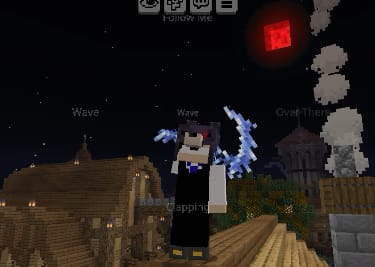
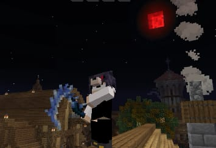

Kenangan Setiap Season
Selamat datang di galeri resmi server Minecraft Nightmare! Jelajahi kumpulan momen terbaik, bangunan kreatif, dan petualangan seru dari setiap season yang telah kami lalui bersama. Setiap gambar menceritakan kisah unik dari server kami.
Cerita Server Kami
Server Nightmare adalah rumah bagi komunitas yang dinamis dan kreatif. Setiap season membawa tema unik, tantangan baru, dan cerita tak terlupakan. Galeri ini adalah monumen digital untuk dedikasi, kerja keras, dan persahabatan yang terjalin di server kami. Kami berharap galeri ini dapat menghidupkan kembali kenangan indah dari petualangan kita bersama.
S1

S1
